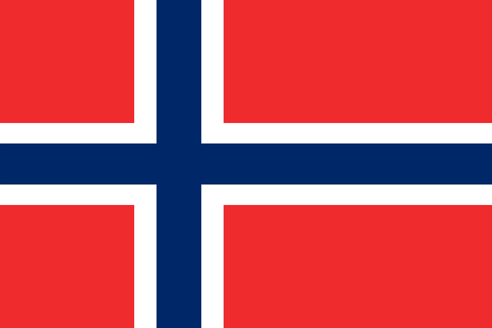

Perustietoja Norjasta
Norjan kuningaskunta eli Norja on perustuslaillinen monarkia Pohjois-Euroopassa. Maa kuuluu Pohjoismaihin ja Skandinaviaan. Se on Ruotsin länsi- ja Suomen pohjoisnaapuri, ja sillä on yhteistä rajaa myös Venäjän kanssa.
Pinta-alaltaan varsinainen Norja (manneralue lähisaarineen) on kolmanneksi suurin Pohjoismaa (n. 323 802 Km²). Väestöltään Norja on Pohjoismaista neljänneksi suurin. Norjan pääkaupunki on Oslo.
Norjan maantiede
Maa on suurimmaksi osaksi vuoristoa. Laajoja tasaisempia alueita on etupäässä vain maan kaakkoisosassa Oslonvuonon itäpuolella. Pohjoisempana Norjan ja Ruotsin rajalla on Skandien poimuvuoristo eli Kölivuoret. Norjan korkein vuori on Galdhøpiggen, joka sijaitsee Jotunheimenin vuoristossa. Se on 2 469 metriä korkea ja samalla Pohjois-Euroopan korkein vuori.
Norjan viisi suurinta kaupunkia ovat:
- Oslo, 876 391 asukasta
- Bergen, 227 752 asukasta
- Stavanger, 189 828 asukasta
- Trondheim, 160 072 asukasta
- Fredrikstad, 101 698 asukasta
Väkiluku ja Bruttokansantuote
| Vuosi | Väkiluku (milj.) |
|---|---|
| 1980 | 4.07 |
| 1990 | 4.23 |
| 2000 | 4.47 |
| 2010 | 4.85 |
| Vuosi | BKT |
|---|---|
| 1980 | 64.43 miljardia |
| 1990 | 119.79 miljardia |
| 2000 | 171.31 miljardia |
| 2010 | 429.13 miljardia |